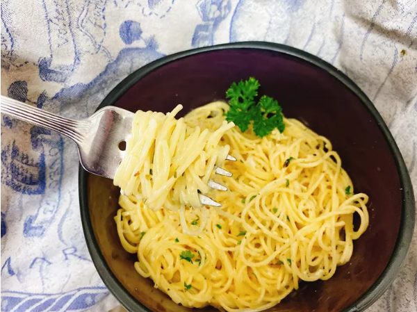

Home Made Pasta Roni
Description
Call it a childhood craving, dorm room gourmet, or simply a grocery store pantry staple, but homemade angel hair pasta with herbs is just as tasty and fast to make! There's no denying the simplicity.
Ingredients
- 2 cups chicken broth
- 3 ounces angel hair pasta
- 1 tablespoon butter
- 1 clove garlic, minced
- ½ teaspoon Italian seasoning
- ¼ cup heavy cream
- ¾ cup finely shredded Parmesan cheese
- 1 teaspoon minced fresh parsley, or to taste
- Bring chicken broth in a saucepan to a boil over medium-high heat. Cook angel hair pasta in the boiling broth, stirring occasionally, until tender yet firm to the bite, 4 to 5 minutes.
- Drain pasta, reserving 1/4 cup of chicken broth.
- Melt butter in a saucepan over medium-low heat; add garlic and cook until fragrant, about 30 seconds. Stir in Italian seasoning, reserved 1/4 cup chicken broth, and whipping cream. Add Parmesan cheese and stir until melted.
- Stir in angel hair pasta; toss to coat. Garnish with freshly minced parsley.